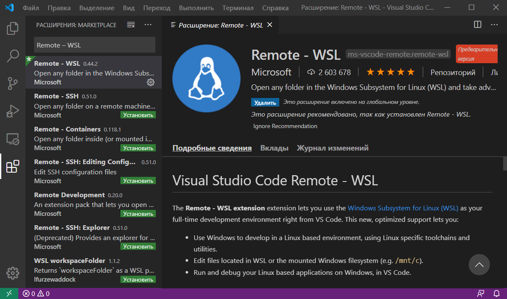
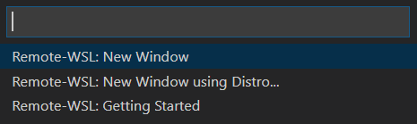
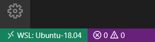
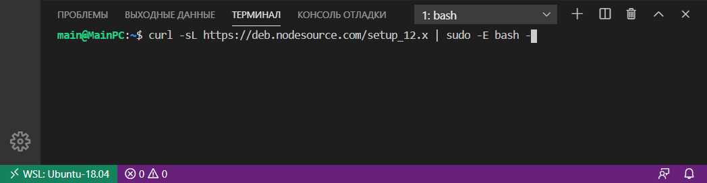
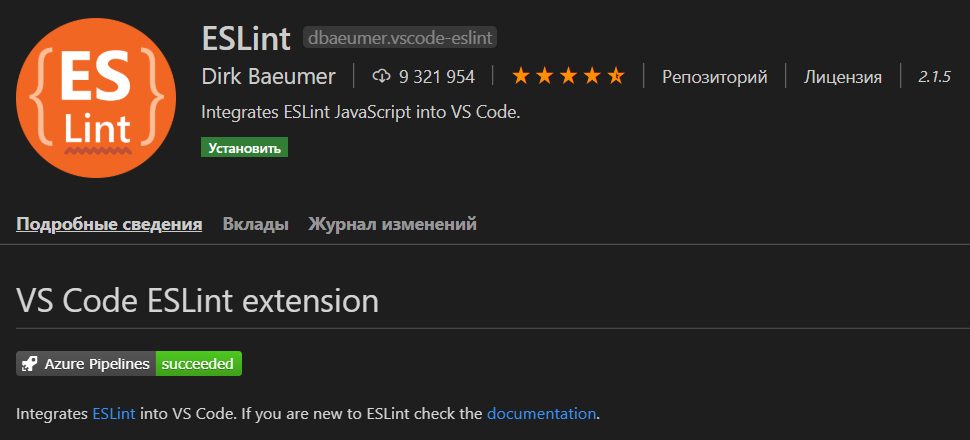
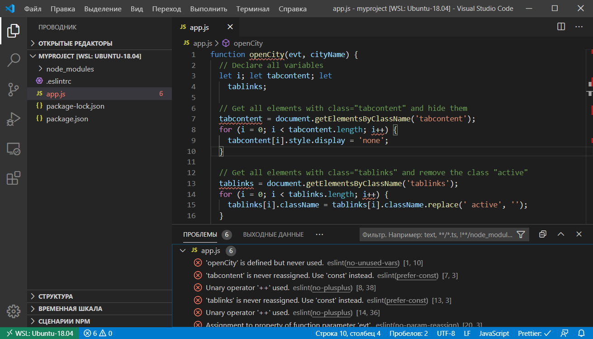

VS Code содержит большое количество настроек, с помощью которых вы можете настроить этот редактор под себя.
Изменение настроек в VS Code осуществляется в соответствующем окне. Открыть его можно несколькими способами:
Список параметров, которые пользователи наиболее часто настраивают:
Изменять настройки можно как глобально, так и конкретно для текущего проекта. Изменение глобальных настроек осуществляется в окне «Параметры» на вкладке «Пользователь». Эти настройки сохраняются в файл «settings.json». Открыть его можно нажав на значок «Открыть параметры (JSON)».
Пример файла «settings.json»:
{
"editor.wordWrap": "wordWrapColumn",
"editor.wordWrapColumn": 120,
"editor.minimap.enabled": false,
"editor.formatOnSave": true,
"editor.tabSize": 2,
"editor.detectIndentation": false,
"editor.fontSize": 17,
"editor.mouseWheelZoom": true,
"workbench.startupEditor": "none",
"files.insertFinalNewline": true,
"files.trimFinalNewlines": true,
"files.trimTrailingWhitespace": true,
"telemetry.enableTelemetry": false,
"telemetry.enableCrashReporter": false,
"files.autoSave": "afterDelay",
"files.autoSaveDelay": 10000
}
Кстати, изменять настройки также можно просто посредством редактирования этого файла.
Сохранение настроек для рабочей директории выполняется в специальный файл «settings.json», который будет добавлен в папку «.vscode». Настройка параметров для рабочей директории (проекта) можно также выполнить просто посредством редактирования этого файла.
Настройка VS Code для HTML и CSS
Visual Studio Code обеспечивает базовую поддержку при написании HTML и CSS из коробки. Имеется подсветка синтаксиса, умные дополнения с IntelliSense и настраиваемое форматирование. VS Code также имеет отличную поддержку Emmet.
Зачем нужен Emmet? Он позволяет очень быстро писать код.
Например, Emmet аббревиатура ul>li*3>span.item-$ после нажатии клавиши Tab создаст следующий код:
<ul>
<li><span class="item-1"></span></li>
<li><span class="item-2"></span></li>
<li><span class="item-3"></span></li>
</ul>
В CSS аббревиатура Emmet как dn создаст код display: none.
VS Code имеет встроенные средства для форматирования кода. Настроить параметры форматирования можно в настройках. Находятся они в разделах «Расширения -> HTML» и «Расширения -> CSS».
Комбинация клавиш для выполнения форматирования в VS Code: Shift+Alt+F.
Функциональность VS Code при работе с HTML и CSS можно улучшить с помощью расширений.
Вот перечень некоторых из них:
VS Code имеет возможность, которая позволяет сворачивать области CSS кода заключенные между /*#region*/ и /*#endregion*/:
/*#region*/
...
/*#endregion*/
Настройка VS Code для разработки на JavaScript
Разработку веб-проекта в Windows 10 можно ввести не только с использованием программ, предназначенных только для этой операционной системы, но и посредством WSL (Linux). Если вам нравится Linux и вы хотите его использовать, то Windows 10 позволяет вам это сделать из коробки (то есть непосредственно из дистрибутива). В следующем разделе приведена инструкция по установке WSL в Windows 10 и настройке Visual Studio Code для её использования в качестве среды разработки.
Кроме этого, ОС Linux в большинстве случаев - это система, которая затем у вас будет установлена на продакшене. А это значит, что вы получите окружение как на сервере или более близкое к этому.
Если вы не хотите использовать WSL в качестве среды разработки или работаете в другой операционной системе, то в этом случае можете сразу же перейти к разделу «Установка и настройка ES Lint».
Как в Windows 10 установить WSL и использовать её в VS Code?
Коротко о подсистеме Windows для Linux (WSL). В Windows 10 появилась возможность осуществлять веб-разработку прямо в среде на основе Linux. Для этого вам необходимо просто включить компонент Windows 10 «Подсистема Windows для Linux (WSL)» и установить из Microsoft Store «любимый» дистрибутив Linux (например, Ubuntu 18.04). Подсистема WSL появилась в Windows 10, начиная с обновления «Anniversary Update» (1607), а версия 2004 этой ОС уже включает WSL 2.
Более подробно процесс установки WSL описан в этой статье, а именно в разделах «Включение подсистемы Windows для Linux» и «Установка приложения «Ubuntu». Если вы ещё не читали эту статью, то можете это сделать, перейдя по представленной выше ссылке.
Установка расширения «Remote – WSL» в VS Code. Для использования WSL в качестве среды для полной разработки прямо из VS Code необходимо установить расширение «Remote – WSL».
Это позволит вам ввести веб-разработку прямо в среде на основе Linux, использовать специфичные для неё наборы инструментов и утилит, а также запускать и отлаживать свои приложения в Linux, не выходя при этом из Windows.
Это расширение позволит выполнять команды непосредственно в WSL, а также редактировать файлы, расположенные в WSL или в смонтированной файловой системе Windows (локальные диски находятся в /mnt) не беспокоясь о проблемах с совместимостью.
После установки расширения и перезагрузки редактора VS Code у вас появится индикатор WSL в нижнем левом углу окна программы.
При нажатии на него вам будут показаны команды Remote-WSL. Используя их, вы можете открыть новое окно VS Code, в котором в качестве среды будет использоваться WSL. При этом команда «Remote-WSL: New Window» выполнит это с использованием дистрибутива Linux, который у вас назначен по умолчанию, а команда «Remote-WSL: New Window using Distro...» - используя конкретный дистрибутив Linux из установленных.
Версия дистрибутива Linux, которая сейчас используется в WSL отображается в индикаторе следующим образом:
Установка и настройка ESLint
ESLint – это инструмент, который крайне желательно установить в систему, если вы разрабатываете код на JavaScript. Он будет показывать вам ошибки в коде, а также направлять вас при его написании так, чтобы он был выдержан в едином стиле.
Перед тем как переходить к установке ESLint сначала инсталлируем в ОС «Node.js v12.x».
В Ubuntu это осуществляется следующим образом:
curl -sL https://deb.nodesource.com/setup_12.x | sudo -E bash -
sudo apt-get install -y nodejs
Вводить эти команды будем через терминал VS Code. Открыть его можно посредством комбинации клавиш Ctrl+Shift+` или кликнув в главном меню на пункт «Терминал -> Создать терминал».
Проверить номер установленной версии «Node.js» можно так:
node -v
После установки «Node.js» создадим папку для проекта в файловой системе ОС, а затем откроем её с помощью VS Code.
Создание проекта обычно начинается с его инициализации посредством npm. Этот процесс можно выполнить посредством следующей команды:
npm init -y
В результате выполнения этой команды у вас появится файл «package.json». Этот файл кроме информации о проекте и других вещей, ещё будет содержать набор зависимостей для данного проекта. Имея этот файл, мы сможем при необходимости очень быстро развернуть проект на любом другом компьютере.
Теперь перейдём к установке ESLint и некоторых других npm пакетов в проект:
sudo npm install --save-dev eslint eslint-config-airbnb-base eslint-plugin-import
Ключ --save-dev используется для того чтобы сделать запись об этих пакетах в «package.json». Данный ключ добавит их в секцию devDependencies.
Установка npm пакетов осуществляется в папку «node_modules» этого проекта.
В качестве стиля кода мы будем использовать Airbnb. Это руководство используется многими известными организациями и имеет очень большое количество звёзд на GitHub.
Для того, чтобы можно было использовать Airbnb для расширения базовой конфигурации ESLint мы установили пакеты eslint-config-airbnb-base (без зависимостей от React) и eslint-plugin-import (для поддержки синтаксиса импорта/экспорта ES6+ и предотвращения проблем с неправильным написанием путей к файлам и имен импорта).
После окончания загрузки пакетов приступим к интегрированию ESLint в Visual Studio Code. Осуществляется это посредством установки расширения с одноимённым названием.
Для того чтобы ESLint работал необходимо создать конфигурационный файл. Это можно выполнить как посредством команды ./node_modules/.bin/eslint --init (настройка осуществляется посредством ответов на вопросы мастера), так и самостоятельно.
Конфигурационный файл необходим для задания настроек, в соответствии с которыми ESLint будет осуществлять проверку JavaScript кода.
Чтобы сделать это самостоятельно нам необходимо в корне проекта создать файл .eslintrc и добавить в него, например, следующие данные:
{
"env": { "browser": true, "es6": true },
"extends": "airbnb-base",
"parserOptions": { "ecmaVersion": 6 }
}
Эти данные будут определять следующие настройки для ESLint:
Если вам необходимо дополнительно линтить ошибки кода, размещенного в теге <script>, то установите плагин eslint-plugin-html:
sudo npm install --save-dev eslint-plugin-html
Форматирование кода JavaScript будем выполнять с помощью Prettier. Для правильной совместной работы Prettier и ESLint установим следующие npm пакеты:
sudo npm install --save-dev prettier eslint-plugin-prettier eslint-config-prettier
Для того чтобы ESLint не просматривал определённые папки и не выдавал по ним ошибки следует создать файл .eslintignore и прописать их в нём:
/.vscode
/.git
node_modules
Если у вас включено стандартное форматирование кода в VS Code при сохранении, то чтобы в качестве плагина для форматирования js файлов применялся ESLint, следует в конфигурационный файл «settings.json» добавить следующее:
"editor.formatOnSave": true,
// добавить это
"[javascript]": {
"editor.defaultFormatter": "dbaeumer.vscode-eslint"
},
"eslint.format.enable": true
Если вы хотите чтобы при сохранении файлов форматировались только js файлы, то editor.formatOnSave необходимо установить значение false, а true этому ключу только в секции "[javascript]":
"editor.formatOnSave": false,
"[javascript]": {
"editor.formatOnSave": true,
"editor.defaultFormatter": "dbaeumer.vscode-eslint"
},
"eslint.format.enable": true
Теперь, ESlint будет проверять JavaScript код и показывать в нём ошибки и предупреждения. Они будут помечаться с использованием волнистых линий.
Результат проверки JavaScript кода ESLint:
Дополнительная настройка VS Code
Вот ещё некоторый список плагинов для VS Code, которые могут расширить возможности Visual Studio Code для фронтенд разработки и не только: